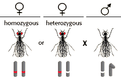
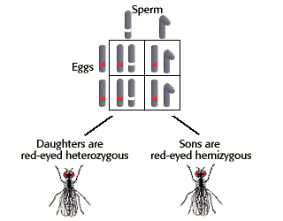
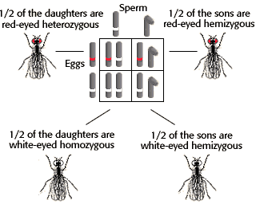

Sex-Linked Inheritance Problem Set
Problem 2: Test cross of a red-eyed female fly
Tutorial to help answer the question
A female Drosophila of unknown genotype was crossed with a white-eyed male fly, of genotype  (w = white eye allele is recessive, w+= red-eye allele is dominant.) Half of the male and half of the female offspring were red-eyed, and half of the male and half of the female offspring were white-eyed. What was the genotype of the female fly? (w = white eye allele is recessive, w+= red-eye allele is dominant.) Half of the male and half of the female offspring were red-eyed, and half of the male and half of the female offspring were white-eyed. What was the genotype of the female fly?
|
Tutorial
Possible Female Genotypes
|  |
Genotypes and phenotypes of offspring if the female is homozygous
|
|
 |
Genotypes and phenotypes of offspring if the female is heterozygous
|
Therefore the female must be a heterozygous, Xw+ Xw. |
 |
Summary
|
We had a cross between a female Drosophila of unknown genotype with a white-eyed male fly. The result of the cross was that half of the male and half of the female offspring were red-eyed, and half of the male and half of the female offspring were white-eyed. What was the genotype of the female fly? The female fly had to be heterozygous, Xw+ Xw. |


University of Arizona
Updated: July 15, 1999
Contact the Development Team
http://biology.arizona.edu
All contents copyright © 1996-99. All rights reserved.